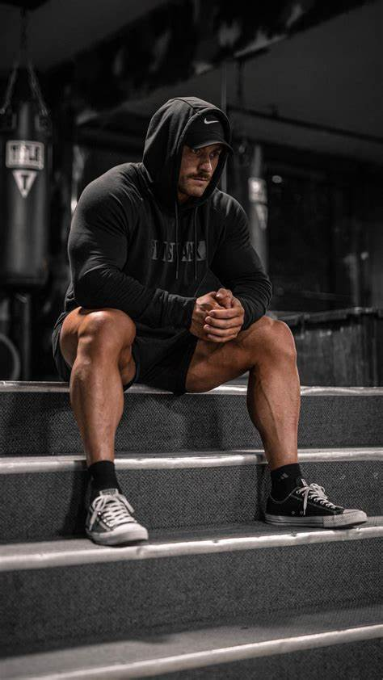
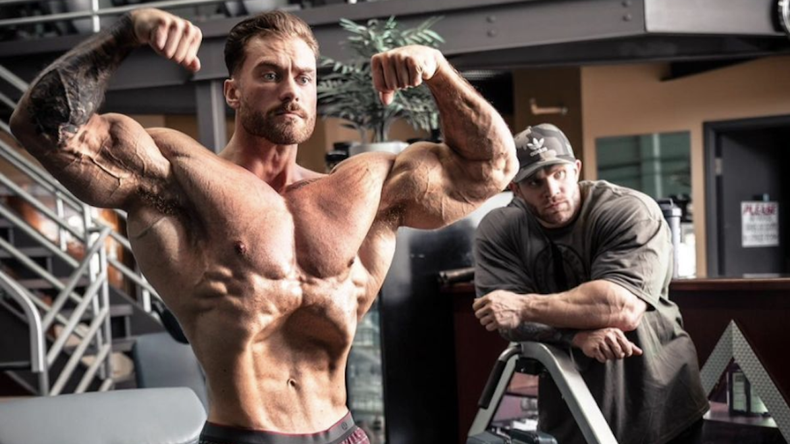
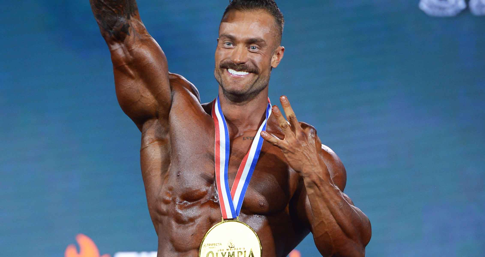
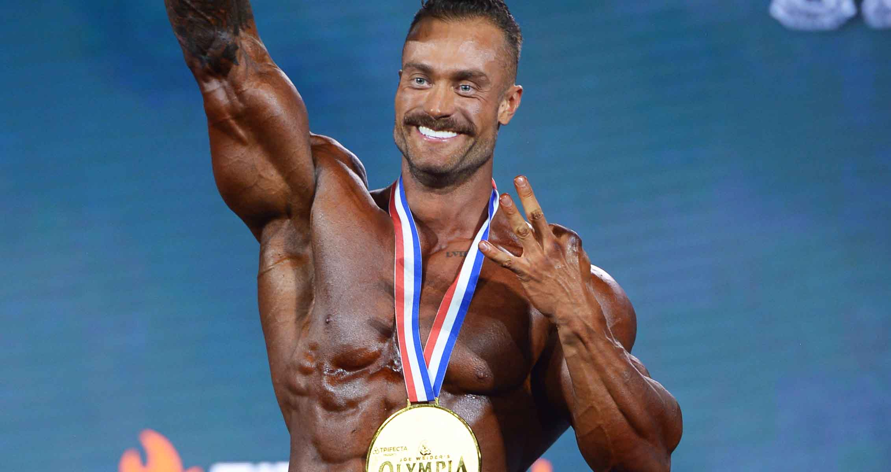

返回首页⬅️
Chris Bumstead--奥赛传奇六冠王

奥赛征程
2017 年，他参加了匹兹堡职业赛并获得冠军，同年在奥林匹亚先生大赛中获得古典健美亚军。2018 年，再次获得奥林匹亚古典健美亚军。从 2019 年至 2023 年，Chris Bumstead 连续五次获得奥林匹亚古典健美冠军 。2024 年 10 月 13 日，他获得第六个奥赛古典健美冠军，并在获奖后宣布退役.
影响力
1.审美标准与风格引领
塑造古典美标准：克里斯拥有完美的骨架和身体比例，其身材特点和肌肉形态符合大众对古典健美的审美理想，被认为是最能代表古典健美的运动员之一 。他的体型展现了古典健美所追求的整体匀称和美感，包括窄腰、宽肩、大 V 型背部等经典特征，为古典健美树立了新的审美标准，影响了裁判和观众对该项目的评判和欣赏角度.
独特风格与魅力：他的外貌形象和气质也与古典健美风格相得益彰，被粉丝亲切地称为 “C 宝”。其长相、胡子等都具有古典韵味，加上他在舞台上展现出的自信和魅力，形成了自己独特的风格，吸引了众多粉丝的喜爱和追捧，进一步强化了古典健美在人们心目中的形象
2.行业标杆与激励作用
职业精神典范：克里斯对健美运动的执着、努力和奉献精神为行业树立了榜样。他在训练中严格自律，保持规律的生活方式和高强度的训练计划，克服了伤病等诸多困难，不断挑战自我、突破极限，这种坚韧不拔的职业精神激励着无数健美运动员和健身爱好者，让他们明白只有通过不懈的努力和坚持才能取得成功.
年轻一代的偶像：作为年轻的健美巨星，他成为了众多年轻运动员的偶像和目标。他的成功故事让更多的年轻人看到了在健美领域实现梦想的可能性，吸引了更多的年轻人加入到健美运动中来，为健美行业注入了新的活力和人才.
部分个人展示

 
返回首页⬅️

返回首页⬅️